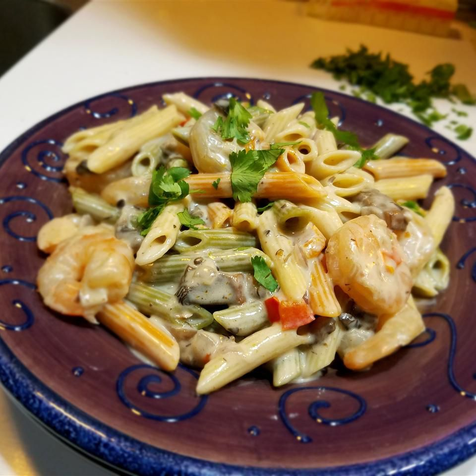

Home
Peppered Shrimp Alfredo

Description
Yummy shrimp in an Alfredo sauce, with portobello mushrooms and red
peppers.
Originally found
on allrecipes.
Ingredients
- 12 ounces penne pasta
- 1⁄4 cup butter
- 2 tablespoons extra-virgin olive oil
- 1 onion, diced
- 2 cloves garlic, minced
- 1 red bell pepper, diced
- 1⁄2 pound portobello mushrooms, diced
- 1 pound medium shrimp, peeled and deveined
- 1 (15 ounce) jar Alfredo sauce
- 1⁄2 cup grated Romano cheese
- 1⁄2 cup cream
- 1 teaspoon cayenne pepper, or more to taste
- salt and pepper to taste
- 1⁄4 cup chopped parsley
Steps
- Bring a large pot of lightly salted water to a boil. Add pasta
and cook for 8 to 10 minutes or until al dente; drain.
- Meanwhile, melt butter together with the olive oil in a
saucepan over medium heat. Stir in onion, and cook until
softened and translucent, about 2 minutes. Stir in garlic,
red pepper, and mushroom; cook over medium-high heat until
soft, about 2 minutes more.
- Stir in the shrimp, and cook until firm and pink, then pour in
Alfredo sauce, Romano cheese, and cream; bring to a simmer
stirring constantly until thickened, about 5 minutes. Season
with cayenne, salt, and pepper to taste. Stir drained pasta
into the sauce, and serve sprinkled with chopped parsley.